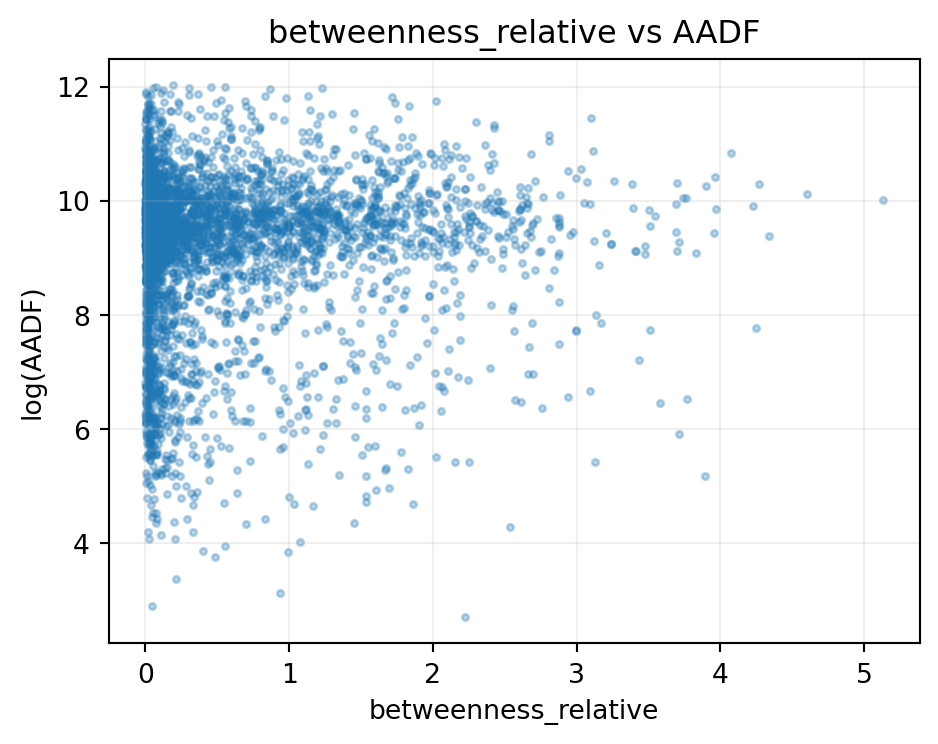
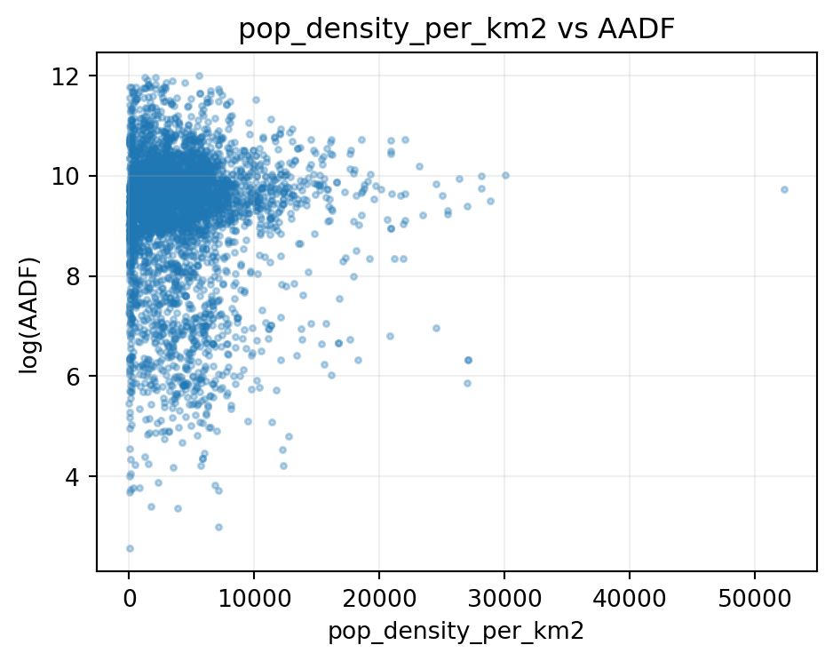
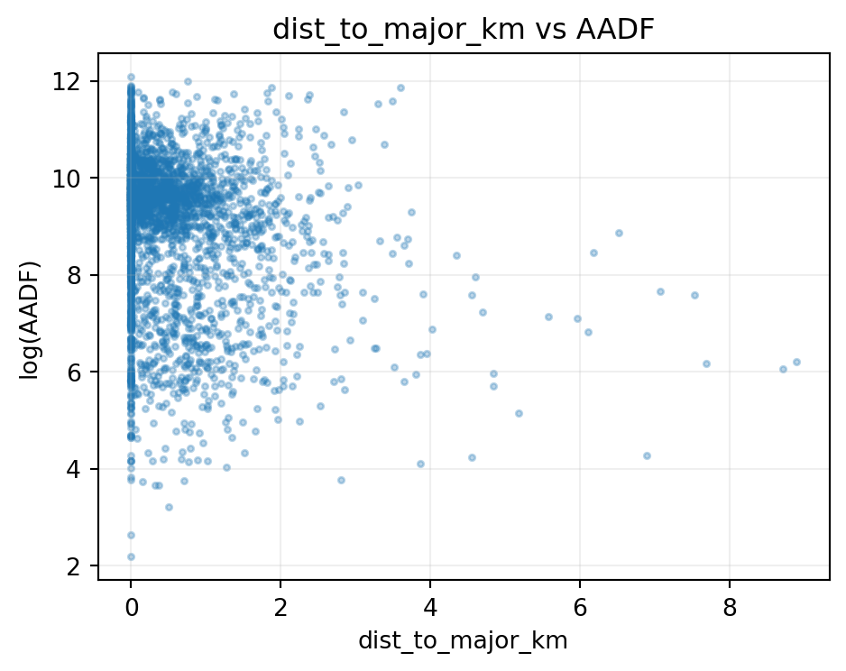
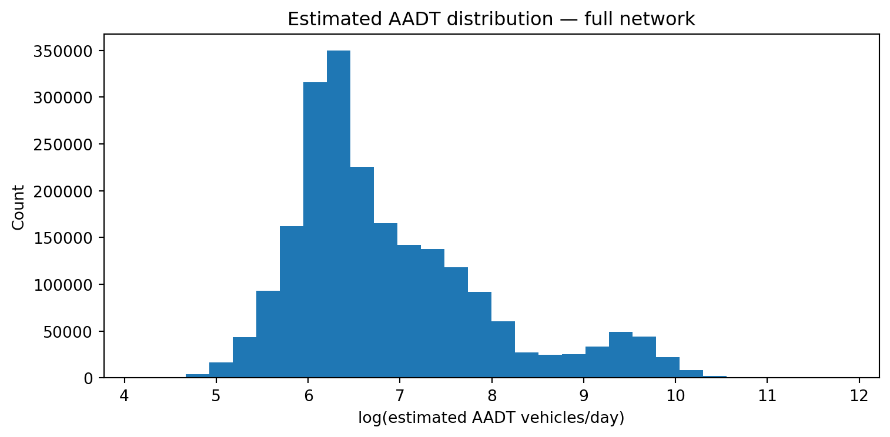

Collision counts cannot be compared fairly across roads without accounting for traffic exposure. A motorway with 100,000 vehicles per day should have more collisions than a rural lane with 500. Risk is collisions per unit of traffic exposure, not collisions per road link.
AADF (Annual Average Daily Flow) count points provide directly measured exposure at ~13,000 locations across the study area (Birmingham to Yorkshire). Most road links — particularly minor and unclassified roads — have no nearby count point. Stage 1a estimates AADT for all 2.1 million OS Open Roads links using the measured count points as training data.
2 Data and model setup
from pathlib import Pathimport numpy as npimport pandas as pdimport matplotlib.pyplot as pltfrom road_risk.config import _ROOT as ROOTfrom road_risk.model.constants import RANDOM_STATEtry:import geopandas as gpdexceptException: gpd =Noneroad = pd.read_parquet(ROOT /"data"/"features"/"road_link_annual.parquet")road_class_col =next( (c for c in ["road_classification", "road_type"] if c in road.columns), None)aadt_path = ROOT /"data"/"models"/"aadt_estimates.parquet"aadt = pd.read_parquet(aadt_path) if aadt_path.exists() else pd.DataFrame()net_path = ROOT /"data"/"features"/"network_features.parquet"net = pd.read_parquet(net_path) if net_path.exists() else pd.DataFrame()print(f"road_link_annual : {road.shape[0]:,} rows × {road.shape[1]} cols")print(f"aadt_estimates : {aadt.shape[0]:,} rows"ifnot aadt.empty else"aadt_estimates : not found")print(f"network_features : {net.shape[0]:,} links"ifnot net.empty else"network_features : not found")
Only a minority of road links have a directly measured AADF count point within the 2km spatial join cap. Most of the network — especially minor and unclassified roads — relies on the Stage 1a model.
Note: road_link_annual contains only the ~391k link×year rows that have at least one collision record. Coverage figures below reflect that filtered subset, not the full 2.1M-link OS Open Roads network.
if"all_motor_vehicles"in road.columns: cov_overall = road["all_motor_vehicles"].notna().mean()print(f"Collision-linked rows with measured AADF: {road['all_motor_vehicles'].notna().sum():,} "f"({cov_overall:.1%} of road_link_annual rows)")ifnot aadt.empty:print(f"Full-network AADT estimates: {len(aadt):,} link×year rows "f"({aadt['link_id'].nunique():,} unique links)") cov_by_year = road.groupby("year")["all_motor_vehicles"].apply(lambda s: s.notna().mean() ) plt.figure(figsize=(8, 4)) cov_by_year.plot(marker="o") plt.ylabel("Share of links with measured AADF") plt.title("Direct AADF coverage by year") plt.ylim(0, 1) plt.grid(alpha=0.2) plt.tight_layout() plt.show()
Collision-linked rows with measured AADF: 351,976 (90.0% of road_link_annual rows)
Full-network AADT estimates: 21,675,570 link×year rows (2,167,557 unique links)
count 351969.0
mean 17800.0
std 19405.0
min 4.0
10% 1170.0
25% 6913.0
50% 13512.0
75% 21524.0
90% 35374.0
99% 109676.0
max 195822.0
Name: all_motor_vehicles, dtype: float64
5 Feature–target relationships
Key features used in Stage 1a: road classification, trunk-road indicator, location, network betweenness, population density, distance to major road, link length, and HGV proportion where measured. WebTRIS time-profile features are not used in Stage 1a because they are not available for the full network at inference time; those belong to Stage 1b.
5.1 Counted-only AADF training target
The AADF table contains both direct counts and DfT-estimated rows. Stage 1a now uses only rows where estimation_method == "Counted" for model training and holdout validation. Estimated AADF rows are year-on-year interpolations, so including them would mix DfT interpolation with the project’s own network-wide extrapolation model.
This drops 1,288 count points (9.1% of count-point locations) with no Counted observation in the 2015-2024 training window. The drop rate is approximately twice as high on Major roads (11.2%) as on Minor roads (4.6%), which means the counted-only training set is modestly less representative of Major-road conditions than a raw AADF training set would be. Regional distribution is broadly uniform; no single core study region loses coverage disproportionately. Wales shows a higher rate (17%), but the Welsh count-point sample is small and the pattern is consistent with an edge-of-study-area effect; this was not investigated further.
Using Estimated rows with downweighting was considered but rejected as arbitrary without a principled uncertainty model for DfT’s interpolation scheme. The filter applies only to the learning signal: the fitted model is still applied to every OS Open Roads link for every AADF year, so downstream exposure coverage remains unchanged.
The counted-only evaluation should be read as a cleaner, more honest target rather than proof that the model became intrinsically stronger. GroupKFold CV R² increased from about 0.72 to 0.83 because DfT’s smoothed carry-forward estimates no longer contaminate the target. Local holdout R² increased from 0.776 to 0.832 and spatial holdout R² from 0.707 to 0.788. Log-MAE is slightly higher on the counted-only holdout, which is expected because direct measurements retain real traffic variance that DfT-estimated rows partly smooth away.
feature_df = road.copy()ifnot net.empty and"link_id"in road.columns: wanted = [c for c in ["link_id", "betweenness_relative", "pop_density_per_km2","degree_mean", "dist_to_major_km", ] if c in net.columns] feature_df = feature_df.merge( net[wanted].drop_duplicates("link_id"), on="link_id", how="left" )check_cols = [c for c in ["all_motor_vehicles", "betweenness_relative","pop_density_per_km2", "dist_to_major_km",] if c in feature_df.columns]iflen(check_cols) >1: corr = feature_df[check_cols].corr(numeric_only=True)print("Pearson correlations with all_motor_vehicles (measured AADF):")print(corr["all_motor_vehicles"].drop("all_motor_vehicles").round(3).to_string())
def scatter_feature(df, x, y="all_motor_vehicles", max_pts=4000): tmp = df[[x, y]].dropna() tmp = tmp[tmp[y] >0]iflen(tmp) > max_pts: tmp = tmp.sample(max_pts, random_state=RANDOM_STATE) plt.figure(figsize=(5, 4)) plt.scatter(tmp[x], np.log(tmp[y]), alpha=0.3, s=6) plt.xlabel(x) plt.ylabel("log(AADF)") plt.title(f"{x} vs AADF") plt.grid(alpha=0.2) plt.tight_layout() plt.show()for col in ["betweenness_relative", "pop_density_per_km2", "dist_to_major_km"]:if col in feature_df.columns and"all_motor_vehicles"in feature_df.columns: scatter_feature(feature_df, col)



6 Estimated vs measured AADT
Stage 1a predictions compared against measured AADF on the training links. Note: because the AADT estimator is trained on these same links, this reflects in-sample fit; see External Validation for held-out performance.
The AADT estimator is trained on AADF count points and applied to every road link in the network. Standard GroupKFold CV (grouped by count_point_id) prevents leakage within a station across years, but withheld stations are still surrounded by nearby training stations with similar road class, urban context, and network structure. The model can lean on those neighbours when predicting the held-out site.
External validation must mimic the real problem the model solves: estimating traffic on roads that have no nearby measurement at all.
7.2 Holdout schemes
Scheme 1 — Local holdout 20% of count point IDs withheld at random. Tests whether the model can fill realistic local gaps where nearby counts still exist.
Scheme 2 — Spatial block All count points north of the 75th-percentile latitude withheld. Tests whether the model generalises to a geographic region with no training support.
After evaluation the production model is retrained on all available counts.
val_path = ROOT /"data"/"models"/"aadt_validation_summary.parquet"if val_path.exists(): val = pd.read_parquet(val_path)print("External validation (log-scale metrics):\n")print(val.to_string(index=False))else:print("Not found — run: python -m road_risk.model --stage traffic")
External validation (log-scale metrics):
scheme r2 mae rmse n_holdout
local 0.830772 0.564729 0.749526 7639
spatial 0.791930 0.650258 0.838882 9773
The spatial-block R² is typically lower than the local-holdout R², confirming that the model interpolates best when nearby counts exist and loses accuracy when extrapolating to unsupported geography. The current Stage 1a model no longer uses WebTRIS-derived features; the dominant signal is road class, with network and location features adding local variation.
8 Estimated AADT distribution across the full network
Year 2024 — 2,167,557 link estimates
count 2167557.0
mean 2179.0
std 4359.0
min 64.0
10% 334.0
25% 464.0
50% 706.0
75% 1674.0
90% 4722.0
99% 20171.0
max 137886.0

9 Known limitations
Warning
The Stage 1a model captures the broad road-class hierarchy, but within-class traffic variation (e.g. busy urban A-road vs quiet rural A-road) is still only partially explained by the current features.
WebTRIS features are intentionally excluded from Stage 1a because measured sensor values are not available for every Open Roads link at inference time. Time-of-day profiles are estimated separately in Stage 1b.
The road_link_annual dataset is filtered to links with at least one collision. Coverage and fit metrics here apply to that subset; the Stage 1a model runs on all 2.1M OS Open Roads links.
The time-zone profile model (Stage 1b) extends this to estimate when traffic flows, not just how much. See Stage 1b: Time-Zone Profiles.